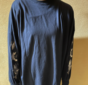
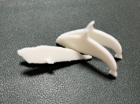

第一章 ～発想と絶望～
今回私が最初に目指したのは怖くないピンセットです。メイクの時、まつ毛に束感を出す際にピンセット使います。
しかし…
ピンセット怖い！！！
先が尖ったピンセットを目の近くで使うのは、刺してしまうのではないかと怖くて怖くてたまりません。そこで先がとがっていないピンセットを作ろうと決意しました！
しかし…
先が尖っていないピンセットでどうやって細かいまつ毛に束感をだすのか…
困りました。どうやってもアイデアが出ない！そこで思いついたのは「怖くなくするのが不可能なら、怖い時間を短くすればいい！！！」 そこで考えたのがこちら↓
しかしまたもや問題発生！！！その名も…
「そうやったらすべて同時に摘まめるのか」問題！！！
そう。構造のアイデアは浮かんだものの実際にどのようにしたらこれが機能するのかが思い浮かばなかったのです😢そんなこんなで八方塞がりになって私は怖くないピンセットを諦めることにしました。 ー完ー
第二章 ～一筋の光～
そんなすべてを失った私の目に映ったのは一枚の服でした。
こちらの服はこの腕の刺繍に一目惚れして購入したもの。海洋動物の食物連鎖です。
そう！食物連鎖！…食物連鎖…？よくよく考えたら怖いけどこの服は可愛い。怖いのに怖くない。怖くない…怖くない！
「そうだ！食物連鎖の怖いけど”怖くない”ピンセットにしよう！」
こうして当初の思惑とは全く異なる”怖くない”ピンセットプロジェクトが始動しました。クリエイティブな脳を持ち合わせていない私は服の通り「シャチ・アザラシ・ペンギン」の食物連鎖で行きます。
第三章 ～まさかの失敗～
画力皆無なりに頑張ったスケッチがこちら↓「くちばしで物掴めたら可愛くない⁉ついでに口で挟めたらそれこそ食物連鎖じゃん！」という発想のもと作成。
完成した試作品がこちら↓(せっかく作った試作品は紛失しました😢)
.png)
実際に作って挟んでみた結果⇒小さすぎて挟めない…口だけの大きさじゃ強度もなくうまく挟めませんでした。
第四章 ～会心の一撃～
そこで考えたのがこちらの試作品第二号↓.png)
生物全体を使って挟みこむ仕組みにすれば、耐久力上がるんじゃね？という考えのもと実際に制作。
実際に作って挟んでみた結果⇒上手くいった！(なお多少の握力は必要)
そこで調子に乗りアザラシとシャチも作成。
.png)
.png)
実際に出力↓

第五章 ～怖いけど怖くない～
今回のテーマは”怖くない”ピンセット。当初の思惑は上手くいきませんでしたが、形は違えど目標は達成です。しかし実際に作った食物連鎖ピンセットは実用性重視というよりデザイン重視でいきました。
最悪ペンギンは使えなくてもいいかなぐらいに考えていましたが、結果はいかに…？
実際に使ったみたときの動画
>